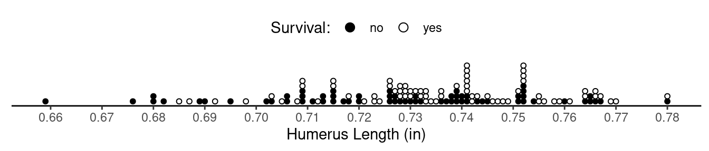

You can also download a PDF copy of this homework assignment.
Instructions: These homework problems will help familiarize you with how we can make inferences concerning the difference between two means (i.e., \(\mu_1 - \mu_2\)). For statistical tests state appropriate null and alternative hypotheses, compute the test statistic, compute the p-value, and make a decision/conclusion. Use a significance level of \(\alpha\) = 0.05. For confidence intervals use a confidence level of 95%. The solutions are given at the end.1
A famous lecture by biologist Hermon Bumpus demonstrated natural selection using data concerning the survival of house sparrows (Passer domesticus) after a severe winter storm.2 After the storm moribund sparrows were brought to the Anatomical Laboratory at Brown University. Some of these sparrows were revived, but many died. All of the sparrows that were brought in were examined with respect to a variety of anatomical characteristics. It is interesting to compare the anatomical characteristics of sparrows that survived versus those that did not. The distributions of humerus (upper wing bone) length in the samples of sparrows that survived and the sparrows that did not are shown below.  Of the sample of 72 observations for sparrows that survived, the mean humerus length was 0.74 in, and the standard deviation was 0.02 in. And of the sample of 64 observations for sparrows that died, the mean humerus length was 0.73 in, and the standard deviation was 0.03 in. Let \(\mu_s\) denote the mean for the population distribution of humerus length for sparrows that would survive, and let \(\mu_d\) denote the mean for the population distribution of humerus length for sparrows that would not survive. Bumpus would probably have pointed out that sparrows that survived tended to have a larger humerus length than those that did not. While this is true for his samples, it is not clear if we can infer from this that this is true in general (i.e., \(\mu_s > \mu_d\)). Conduct a statistical test to determine if the difference in the sample means is statistically significant or not using the hypotheses \(H_0: \mu_s-\mu_d = 0\) versus \(H_a: \mu_s-\mu_d > 0\). Also estimate the difference in mean humerus length (\(\mu_s-\mu_d\)) using a confidence interval.
| Treatment | Size | Mean | SD |
|---|---|---|---|
| A | 29 | 5.21 | 0.92 |
| A+B | 21 | 4.14 | 1.19 |
While objectively the A+B treatment condition rewards the subjects more, it has a less pleasurable end than the A treatment condition, which may lead people to tend to perceive the experience in A to be more pleasurable than that in A+B. Let \(\mu_a\) and \(\mu_{ab}\) denote the mean for two hypothetical population distributions of observations of ratings corresponding to the A and A+B treatment conditions, respectively. Conduct a statistical test with the alternative hypothesis that the peak-end rule results in higher ratings, on average, for treatment condition A than for treatment condition A+B (i.e., \(\mu_a > \mu_{ab}\)).
The German psychiatrist Emil Kraepelin published one of the early scientific treatments of what was at the time (incorrectly) labelled dementia praecox (i.e., premature dementia) but what later became known as schizophrenia.4 Some data from that work shows the age of onset in some women and men who had been diagnosed with dementia praecox.5 These data are shown in the figure below. For the sample of 99 women, the mean age of onset was 30.5 years and the standard deviation was 11.7 years. And for the sample of 152 men, the mean age of onset was 23.9 years and the standard deviation was 8.6 years. Let \(\mu_w\) and \(\mu_m\) represent the mean for the population distributions of age of onset for women and men, respectively. Compute a confidence interval for the difference between \(\mu_w\) and \(\mu_m\).
Pseudoscorpions (Cordylochernes scorpioides) are not scorpions but rather an arachnid that looks somewhat like a scorpion but without the segmented tail and stinger. A study by Newcomer, Zeh, and Zeh (1999) investigated the effects of polyandry on the reproductive success of female pseudoscorpions.6 Each of 36 female pseudoscorpions was randomly put into one of two groups. In one group the females each received two sperm packets from two different males, while in the other group the females received two sperm packets from the same male. The number of brood sacs (an external container of embryos) later produced by each female was counted. The researchers wanted to determine if the genetic benefits of receiving sperm packets from different males (as opposed to the same amount of sperm from one male) would result in greater reproductive success as quantified by the number of brood sacs produced. The average number of successful broods produced by females that received sperm from two different males was 3.62 brood sacs in comparison to 2.2 brood sacs produced by females that received sperm from the same male. The standard deviations were similar between the two treatments: 1.96 brood sacs for the females that received sperm from different males and 1.61 brood sacs for the females that received sperm from the same male. Conduct a statistical test to determine if there is evidence that females that receive sperm packets from two different males produce more brood sacs, on average, than females that receive the same number of sperm packs from the same male. (Note: To find the sample sizes, count the dots in the figure.)
The test statistic is \(t\) \(\approx\) 2.26, which would yield a p-value of approximately 0.014. (Note that the p-value would be twice as large if a two-sided test had been used.) This would lead us to reject the null hypothesis and conclude that there is a statistically significant difference in the mean humerus length between sparrows that survived and those that did not. The confidence interval is approximately 0.01 \(\pm\) 0.009 in.
The hypotheses are \(H_0\!: \mu_a - \mu_{ab} = 0\) versus \(H_a\!: \mu_a - \mu_{ab} > 0\). The test statistic is \(t\) \(\approx\) 3.44, yielding a p-value of approximately 0.001. (Note that the p-value for a two-sided test would be twice as large.) This would lead us to reject the null hypothesis and conclude that, on average, ratings are higher under the A treatment condition than under the A+B treatment condition.
You should obtain the confidence interval for \(\mu_w-\mu_m\) of 6.6 \(\pm\) 2.7 years.
Let \(\mu_d\) and \(\mu_s\) denote the means of the population distributions of the number of brood sacs produced by females receiving sperm from two different males and the same male, respectively. Now consider a test of the hypotheses \(H_0\!: \mu_d - \mu_s = 0\) versus \(H_a\!: \mu_d - \mu_s > 0\). The test statistic is \(t\) \(\approx\) 2.34. This yields a p-value of approximately 0.017. The p-value for a two-sided test would be twice as large. The decision is to reject the null hypothesis and conclude the difference in the mean number of successful broods produced is statistically significant.
In the solutions the reported values of test statistics and p-values have usually been rounded some. Rounding was only done for the final reported values. It was avoided in intermediate calculations (e.g., the value of the test statistic used to compute a p-value was not rounded).↩︎
Bumpus, H. C. (1898). Eleventh lecture. The elimination of the unfit as illustrated by the introduced sparrow, Passer domesticus. (A fourth contribution to the study of variation.) Biological Lectures: Woods Hole Marine Biological Laboratory, 209–225.↩︎
Do, A. M., Rupert, A. V., & Wolford, G. (2008). Evaluations of pleasurable experiences: The peak-end rule. Psychonomic Bulletin & Review, 15(1), 96–998.↩︎
Kraepelin, E. (1919). Dementia praecox and paraphrenia. Edinburgh: Livingstone.↩︎
Age of onset of disorders can be a difficult variable to assess. Sometimes a person’s ability to hide symptoms or their likelihood to be notice by others can affect the apparent age of onset. And when these become confounded with other variables, such as sex, it can make comparisons difficult.↩︎
Newcomer, S. D., Zeh, J. A., & Zeh, D. W. (1999). Genetic benefits enhance the reproductive success of polyandrous females. Proceedings of the National Academy of Sciences, 96, 10236–10241.↩︎